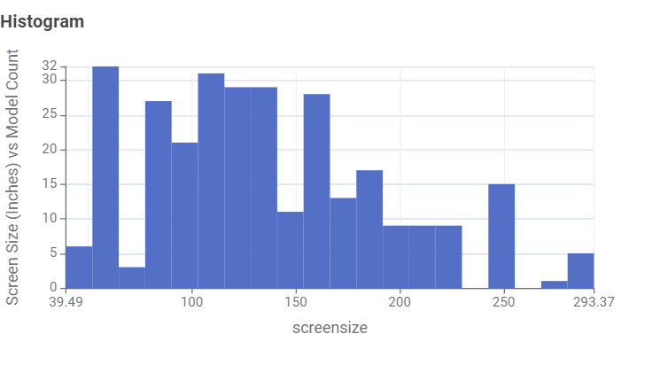
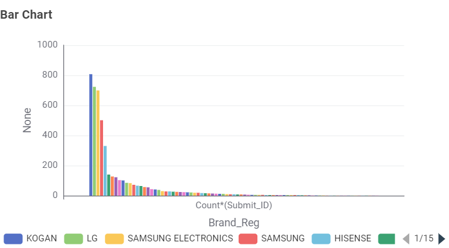
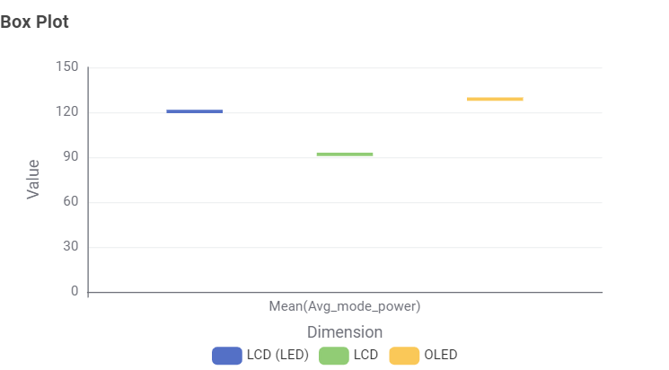
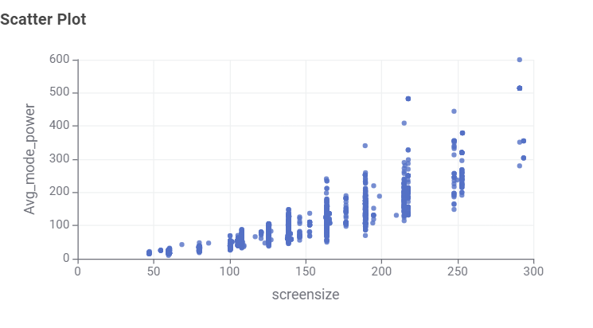
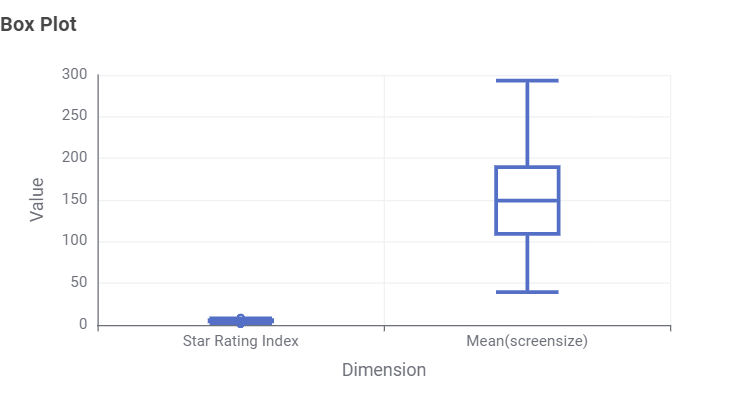

Audience & Overview
This guide helps Australian consumers make informed decisions when choosing a new television by examining market trends, brand availability, screen sizes, and annual energy consumption.
1. Available Screen Technologies
Most televisions in Australia use LCD (LED) screen technology.

Insight: LCD (LED) makes up over 80% of all available television models in Australia.
2. Popular Screen Sizes
Screen sizes vary widely, but certain sizes dominate store shelves.

Insight: 55-inch and 65-inch models are the most frequent screen sizes on the market.
3. Brand Model Availability
Some manufacturers offer a wider variety of models than others.

Insight: Leading brands like Samsung and LG offer the highest number of unique model variations.
4. Energy Use Across Screen Technologies
Different panel technologies consume different amounts of electricity.

Insight: LCD (LED) displays generally consume the least power per year on average compared to OLED and older LCD models.
5. Screen Size vs. Power Consumption
Larger screens require significantly more energy to operate.

Insight: Energy use increases rapidly as screen size grows. Look for higher Energy Star Ratings on 65"+ TVs to manage power costs.
Key Takeaways for Buyers
- Check Energy Star Ratings: Always compare ratings on screens larger than 55 inches.
- Stick to LED/OLED: LED technology offers the best balance of availability and power efficiency.